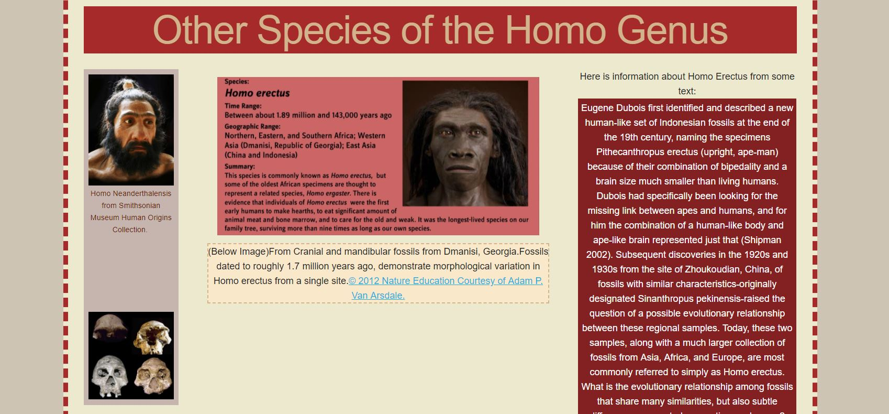
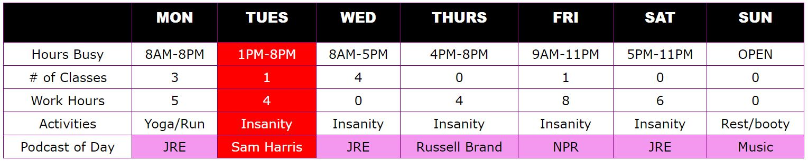
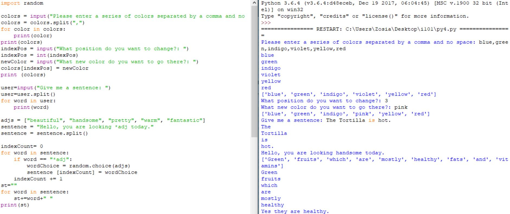

The projects below are my original work and were completed for classes or for pleasure. I used the W3Schools database to learn additional coding techniques.
First Coded Site with HTML & CSS
This assignment was completed individually as an assignment for I101-Introduction to Informatics. In the assignment, I used html and css to add content and decoration to a single web page.
In the coding of this site, the skeleton framework was utilized to create a responsive template.
Link:

Practice with Tables in CSS
This assignment was completed individually as an assignment for I101-Introduction to Informatics. For this assignment, I decorated an html table using CSS.
Link:

Practice with Python
This assignment was completed individually as an assignment for I101-Introduction to Informatics. For this assignment, I utilized loops to generate random sentences in python.
Link:
